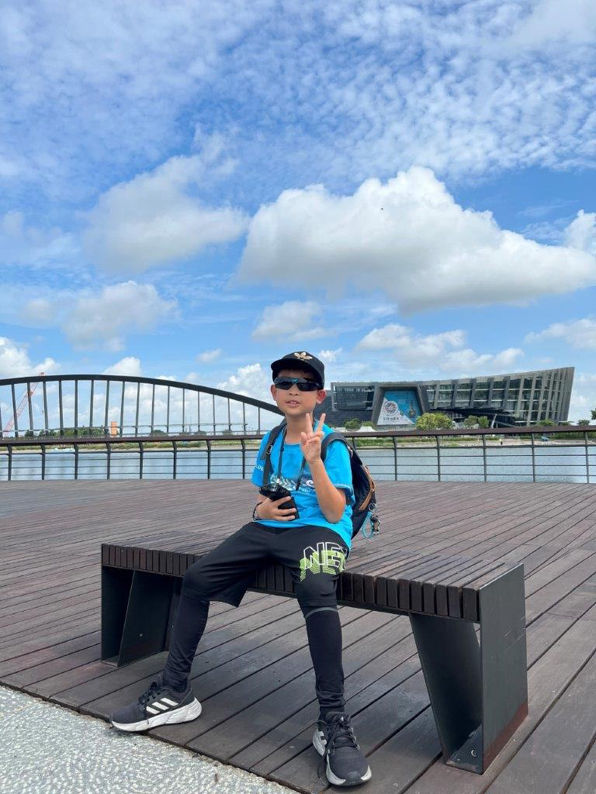
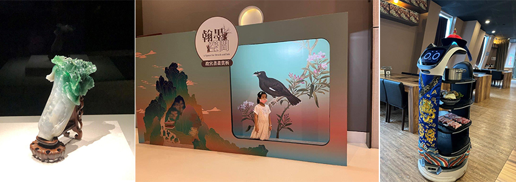
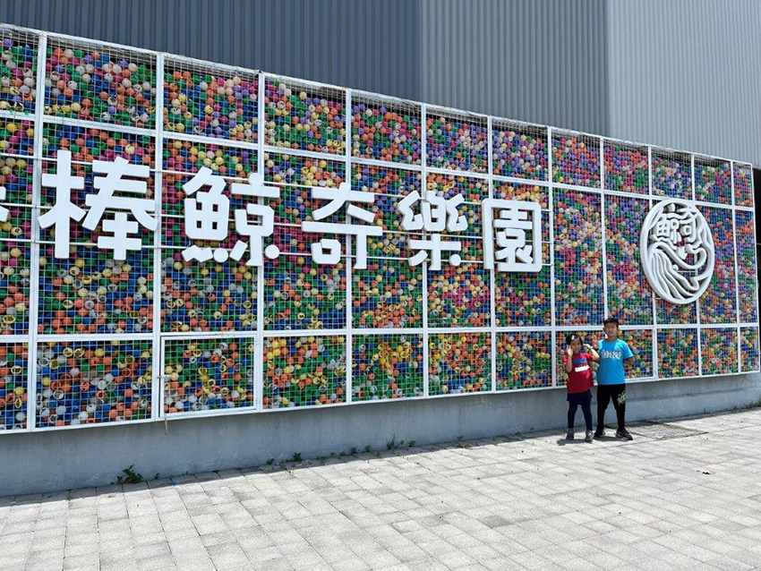
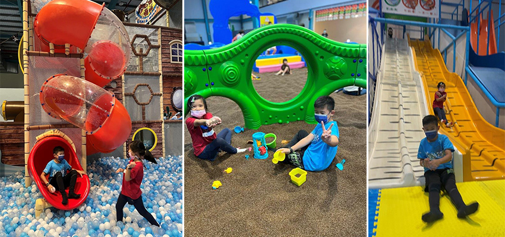
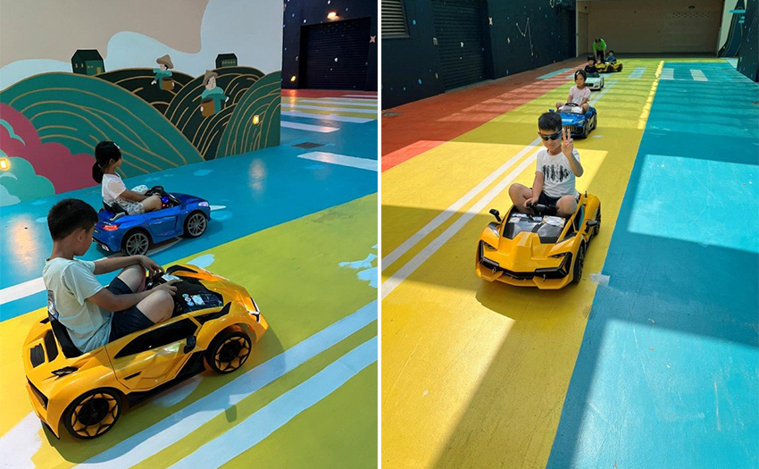

考完期末考，獎勵小朋友好成績，特別帶他們到嘉義遊玩，完全是屬於小孩放電的行程，安排參觀故宮南院，下午到棒棒鯨奇樂園無限放電，晚上夜宿棒棒積木飯店親子館，電動車無限開到飽！
出發前還一度猶豫不決，因為前幾天南部連續大豪雨，早上5:30懷著不安的心情出發，中途經過中部時還有一度飄雨，擔心著南部會不會是下大雨的天氣，幸好抵達時天氣晴朗，萬里無雲，完全是很適合出遊的好天氣！
故宮南院園區很大，遊宮中心可以免費借用腳踏車遊園，但天氣太熱了，下次要選天氣涼爽的春秋季節來訪，應該可以很悠閒的在園區內騎腳踏車或者是漫步，欣賞戶外造景藝術！
|  |
因為太熱，我們就直接先衝進館內參觀，這次主要是奔著人氣國寶展來的，哥哥課本上讀過「翠玉白菜」的介紹，特地帶著他臨場感受一下國寶的生動，他特別想要看「翠玉白菜」上的螽斯和蝗蟲，栩栩如生，象徵著多子多孫的意思。之後我們去一樓的兒童創藝中心，這裡有很多的互動科技可以遊玩，很適合小孩在這裡探索，再回憶一下展覽中看過的介紹。中午我們就在博物館內的”野爺鍋物”用餐，機器人的送餐環節，讓小朋友驚奇連連！
|  |
結束南院行程，再來就是令小孩最期待的鯨奇樂園，一看到巨大的招牌，就萬分雀躍，這佔地2100坪的樂園，有廣大的球池，數不清的溜滑梯，闖進去可能就會迷路的海盜船，室內沙坑不怕曬可以無限挖，整整5小時的放電行程，小孩滿場的飛奔，眨眼間都不知道到底跑到那裡去了！
|  |
|  |
這次安排沒有太多戶外的行程，都是小孩遊玩的設施，大約適合國小二年級以下的小朋友，自行開車或者是搭高鐵前來都很方便，而且嘉義地大又空曠，遊玩起來感覺很舒服，令人流連忘返，期待下一次的旅程！
|  |
這次安排沒有太多戶外的行程，都是小孩遊玩的設施，大約適合國小二年級以下的小朋友，自行開車或者是搭高鐵前來都很方便，而且嘉義地大又空曠，遊玩起來感覺很舒服，令人流連忘返，期待下一次的旅程！